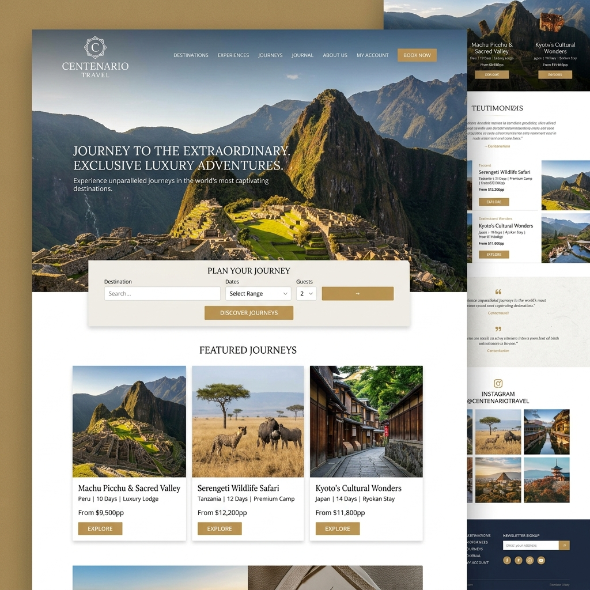
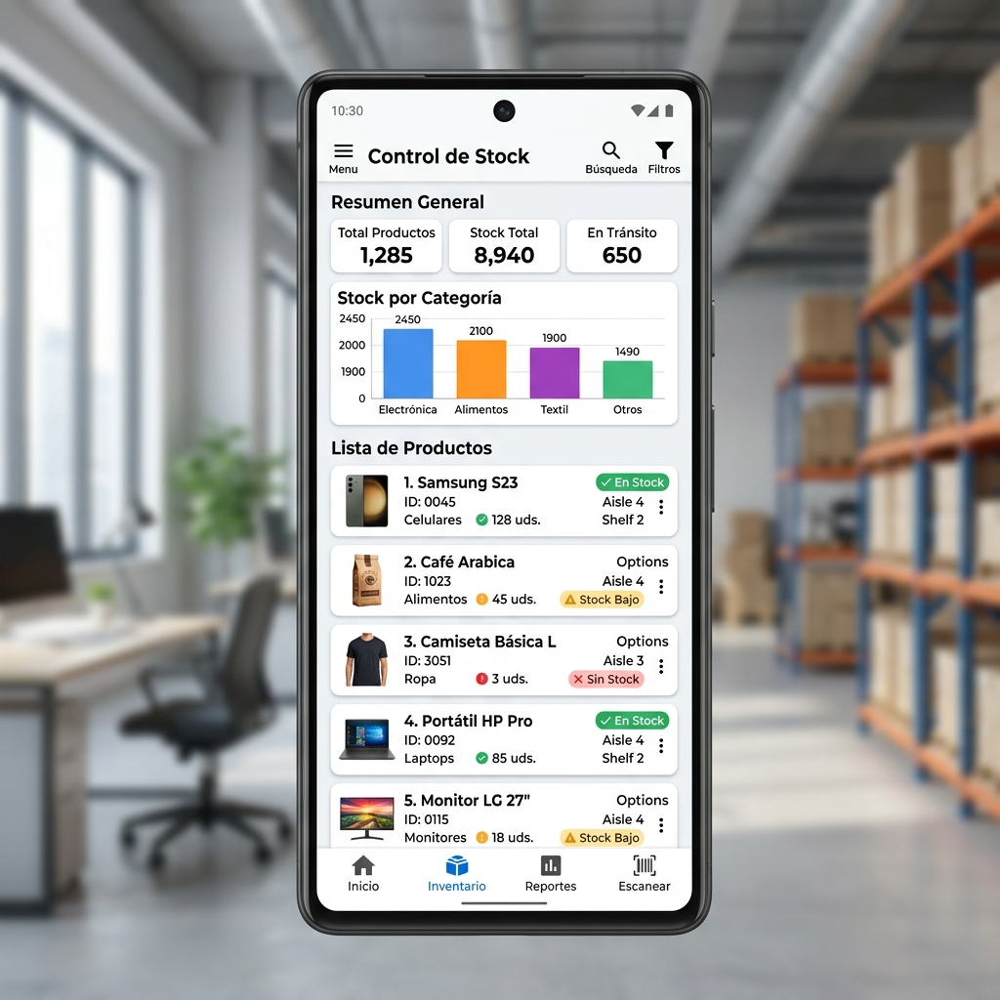

Creo experiencias web modernas, funcionales y con diseño impecable. Transformo ideas en realidad digital.
Soy José, developer y fundador de Creaweb. Me especializo en crear sitios web y aplicaciones que combinan buen diseño con código limpio y rendimiento óptimo.
Mi enfoque es simple: entender el problema real del cliente y construir la solución más elegante y eficiente posible.
Sitios web rápidos, modernos y optimizados para SEO. Desde landing pages hasta plataformas completas.
Interfaces limpias y centradas en el usuario. Diseño que convierte visitantes en clientes.
E-commerce con WooCommerce o soluciones a medida. Vende más con una experiencia de compra óptima.
Plugins personalizados, temas a medida y optimización de rendimiento para WordPress.
Tu web perfecta en cualquier dispositivo. Mobile-first y accesible para todos los usuarios.
Velocidad, SEO técnico y Core Web Vitals. Hago que tu sitio cargue más rápido y posicione mejor.
Plataforma web integral para administración de clínicas. Incluye gestión de pacientes, citas médicas, historias clínicas, facturación y reportes en tiempo real.
Ver proyecto →
E-commerce de viajes y turismo con sistema de reservas online, pasarelas de pago integradas y catálogo dinámico de destinos y paquetes turísticos.
Ver proyecto →
Aplicación móvil para gestión de inventarios. Permite control en tiempo real de productos, alertas de stock bajo, reportes de ventas y sincronización en la nube.
Ver en Play Store →Guía práctica para mejorar el rendimiento y los Core Web Vitals de tu sitio.
Leer más →Menos es más. Aprende a crear interfaces limpias que convierten.
Leer más →Tutorial completo para desplegar tu portfolio en GitHub Pages con dominio personalizado.
Leer más →Estoy disponible para proyectos freelance y colaboraciones. Cuéntame tu idea y la hacemos realidad.